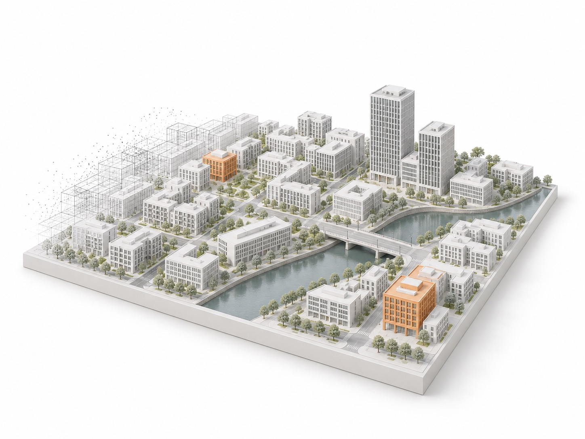

空间信息
空间信息01 / GEOSPATIAL
遥感调查与空间分析
提取地物边界，识别空间变化，
让大范围影像转化为可用的资源信息。
- 业务任务
- 资源调查 · 地物提取 · 多期变化分析
- 结果形式
- 地物轮廓、分类结果、变化区域

志通达算法研发工作室所想，皆可抵达。
向下探索行业解决方案
关注数据从哪里来、结果交给谁使用。
围绕业务任务，选择合适的算法与交付形式。
空间信息01 / GEOSPATIAL
提取地物边界，识别空间变化，
让大范围影像转化为可用的资源信息。
 工业视觉
工业视觉02 / INSPECTION
从巡检图像中定位疑似异常，
帮助业务人员明确需要复核的位置。
 视频感知
视频感知03 / VIDEO ANALYTICS
关联连续画面中的目标与轨迹，
为后续统计与业务分析提供结构化信息。
应用效果
从输入数据、处理任务到输出结果，
展示技术验证中的具体过程。

01 / 设施农业调查
在航拍影像中定位农业大棚，呈现设施分布，辅助资源调查与位置复核。

 原始图像分割结果
原始图像分割结果
 1999 年影像2024 年影像
1999 年影像2024 年影像拖动查看不同年份的地表差异，为变化分析提供输入。

 处理前处理后
处理前处理后对照处理前后的影像色调，观察色彩过渡与整体一致性。
检测、追踪与分割的动态效果演示
当前视频未能加载。打开视频文件
在连续道路画面中关联车辆位置与运动轨迹。
算法能力
完整展示算法用途、数据输入与结果形式。
展示全部 35 项算法
效果示例 · 按实际样本验证没有找到匹配内容，请尝试其他算法或场景关键词。
从卫星与航空影像中提取目标边界、类别与空间分布。
从卫星或航拍影像中提取建筑物轮廓，形成建筑分布结果。
应用城市底图更新、建筑资源调查、园区资产管理
卫星或航拍影像
建筑物轮廓与位置
根据影像中的边界与纹理划分地块，辅助地块调查与管理。
应用地块调查、农业地块管理、用地范围统计
遥感影像
地块边界与分布
识别河流、湖泊等水域，提取水体范围与边界。
应用水域调查、水面变化监测、河湖巡查
遥感影像
水体范围与边界
识别影像中的林地覆盖范围，辅助森林资源调查。
应用森林资源调查、林地覆盖统计、生态监测
遥感影像
林地范围与分布
提取农业大棚的位置与轮廓，辅助设施农业调查。
应用设施农业调查、大棚分布统计、农业用地管理
高分辨率遥感影像
大棚轮廓与分布
识别集中式与分布式光伏区域，提取设施的位置与范围。
应用光伏资源调查、设施分布统计、能源资产管理
高分辨率遥感影像
光伏区域轮廓与位置
识别重点目标，在连续画面中关联位置与运动轨迹。
识别图像或视频中的无人机目标，标记目标位置。
应用空域目标观察、低空巡查、无人机目标定位
图像或视频帧
无人机类别与位置
检测影像中的飞机目标，形成位置标注。
应用机场设施调查、航空影像解译、飞机目标统计
航空或卫星影像
飞机目标位置
从海面、港口等场景影像中检测舰船目标。
应用港口调查、海面目标观察、舰船分布统计
卫星或航拍影像
舰船目标位置
识别画面中的火焰区域，为后续人工复核提供位置线索。
应用现场视频巡查、火情线索发现、重点区域复核
图像或视频帧
疑似火焰区域
在连续视频帧中关联车辆，记录同一目标的运动轨迹。
应用交通流观察、车辆轨迹分析、道路运行统计
连续视频帧
车辆位置、标识与轨迹
识别影像中的桥梁目标，辅助设施调查与定位。
应用交通设施调查、桥梁定位、基础设施管理
遥感或航拍影像
桥梁目标位置
对比多期观测，理解空间变化与长期趋势。
对比同一区域的不同时期影像，标出建筑新增、拆除等变化。
应用城市更新调查、建筑新增与拆除核查
对齐的多期遥感影像
建筑变化区域
对比多期影像，定位地物覆盖发生变化的区域。
应用区域变化调查、用地变化复核、专题制图
对齐的多期遥感影像
地物变化区域
分析同一区域的连续观测，呈现目标随时间的变化趋势。
应用区域发展观察、植被时序分析、长期变化统计
连续多期影像或观测数据
时序变化曲线与区域
结合可用影像和空间信息，估计建筑物高度。
应用城市三维分析、建筑高度分布调查
影像及可用空间信息
建筑物高度估计值
结合地形、地物和项目约束，筛选光伏建设的候选区域。
应用候选区域筛选、光伏资源调查、建设条件评价
遥感影像、地形与约束数据
候选区域与筛选结果
改善图像质量，完成对齐、增强、拼接与场景划分。
提高低分辨率影像的显示细节，为后续查看和分析提供输入。
应用低分辨率影像处理、历史图像细节改善
低分辨率影像
超分辨率影像
调整亮度、对比度等影像表现，改善数据的可读性。
应用低对比度图像处理、图像细节增强
待增强影像
增强后的影像
对齐不同时间或来源的影像，为变化分析和数据融合做准备。
应用多期影像对齐、多源数据融合准备
参考影像与待配准影像
对齐影像与配准参数
按道路、车辆、建筑等场景要素划分像素，形成通用区域图，供后续专题识别使用。
应用场景要素划分、预处理分区、专题图底图制作
待分割影像
区域掩膜或分类图
拼接多幅具有重叠区域的影像，形成连续覆盖的图像。
应用航拍图像拼接、区域影像整合
多幅重叠影像
拼接影像
统一多幅影像的亮度与色彩表现，减少拼接处的视觉差异。
应用多幅图像色彩统一、拼接过渡优化
多幅待处理影像
色调一致的影像
识别作物、树木和养殖目标，辅助资源调查与生态巡查。
识别影像中的作物类别，呈现种植类型与空间分布。
应用种植结构调查、农作物分布统计、农业监测
遥感影像及标注样本
作物类别与分布
结合影像特征区分树木类别，辅助林业调查。
应用林业调查、树种分布分析、生态资源管理
航拍或地面影像
树木类别与位置
对叶片病害进行分类，并以热图辅助理解模型判断。
应用农业巡查、叶片病害筛查、样本辅助复核
作物或树木图像
叶片病害类别与模型关注热图
检测画面中的羊只，辅助群体定位和数量统计。
应用牧场巡查、羊群目标统计、航拍监测
图像或视频帧
羊只位置与计数
检测画面中的牛只，辅助群体定位和数量统计。
应用牧场巡查、牛群目标定位、养殖统计
图像或视频帧
牛只位置与计数
识别水面的疑似漂浮垃圾，为清理与巡查提供位置线索。
应用河湖巡查、漂浮物定位、清理作业辅助
水面巡查图像或视频
疑似垃圾位置与类别
在巡检影像中定位疑似缺陷、异常与作业风险。
分析输电线路巡检影像，标出疑似设施隐患与周边风险。
应用输电设施巡检、绝缘子缺陷复核、线路维护
输电线路巡检影像
疑似隐患位置与类别
分析可见光或热成像数据，标出疑似光伏组件缺陷。
应用光伏组件巡检、疑似缺陷定位、运维辅助
光伏巡检图像
疑似缺陷区域与类别
检测作业人员及安全帽佩戴情况，标出需要复核的目标。
应用作业现场巡查、安全帽佩戴识别
作业现场图像或视频
人员位置与佩戴识别结果
识别焊接件图像中的疑似缺陷，辅助工业质量检查。
应用焊接质量检查、X 光图像分析、缺陷辅助复核
焊接件检测图像
疑似缺陷位置与类别
分析齿轮表面图像，标出疑似瑕疵区域。
应用齿轮表面检查、缺损与划痕识别
齿轮表面图像
疑似瑕疵区域
提取道路表面的裂缝位置与轮廓，辅助路面巡检。
应用道路养护巡查、路面病害定位、裂缝轮廓提取
路面图像
裂缝轮廓或分割掩膜
项目交付
根据业务目标和运行环境约定交付范围，
让结果可核查、模型可运行、系统可接入。
模型文件、推理脚本与运行说明，支持约定环境下的算法调用。
模型与运行材料目标位置、分类标签、轮廓掩膜或专题统计，供业务人员查看与复核。
识别结果与数据说明结合现有系统与部署条件，约定接口、离线处理或其他集成方式。
调用方式与部署方案数据要求、使用说明、评估结果与验收记录，让交接有据可依。
文档与验收材料使用什么样本，覆盖什么场景
评价指标、推理速度与资源条件
部署位置、接口方式与材料范围
明确业务目标、输入数据、使用人员与预期结果，划定本次项目边界。
基于代表性样本评估算法可行性，识别数据限制，形成研发与验收依据。
开展数据处理、模型训练与优化，在约定数据集上评估识别效果和运行表现。
适配约定运行环境，完成结果核查、接口联调与技术材料交接。
开始合作
描述你的目标、已有数据与使用环境。
生成需求说明，为后续沟通做好准备。